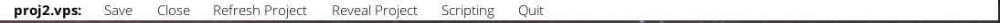
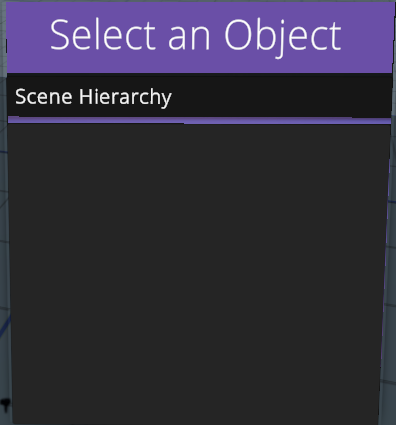

Scene Controls
The Scene Toolbar
On the desktop view there is a toolbar at the top of the window.
 The toolbar displays the project name, as well as several functions for the project. Many of these options are self explanatory.
A few notable options:
Refresh Projectreloads the database of objects and textures, allowing for importing new assets while the application is running. This will cause the VR display to fade to black for a moment, allowing all the new assets to be loaded in without dropping frames.Reveal Projectopens a Windows Explorer window at the project directory.Scriptingis a feature coming in future releases.- After the scene is finished loading, there is also an option for `Camera Smoothing. This adds smoothing to the desktop view camera. It has no affect in VR, but might affect performance.
- When the camera is activated, there is an option for
Mobile Cam. This enables the mobile app functionality that isn't available just yet.
Navigating the Scene
To move around the scene, you have three options.
- You can physically walk around your designated play area.
- Hold both grip buttons (or grab on Valve Index) and and manipulate the scene around you.
- Hold the left trigger to show a teleport indicator. Release the trigger to teleport to the chosen spot.
Manipulating Objects
Your right controller has a pointer that can interact with UI and objects. To interact with an object, click the right trigger while pointing at at either a UI panel or object in the scene. When you click an object, it becomes highlighted. Click the object again to unhighlight it.
A selected object displays a bounding box around the object. Additionally, a Movement Gizmo appears at the pointer's location. Click and drag this gizmo to move the object around the scene.
Use the Right Joystick or Touchpad to rotate the object left and right, as well as move it forward and back.
To toggle scale mode (as indicated by the small Transform Gizmo on the right controller), press the (B) button on your right controller. This button varies depending on what controllers you are using, but they are largely the same.
The Controller Menu
Your Left Controller has a menu pallette that can bring up other context-sensitive menus.

From top to bottom, each button changes what menu is displayed to the right (see below).
For a detailed overview of each menu, see section below.
- Properties -- This menu shows either the scene hierarchy or any properties of the selected object.
- Objects -- This menu displays a grid of available objects including standard assets and imported assets. Select an item to spawn it into the scene.
- Lighting -- This menu has many functions to change the lighting of the scene (see below).
- Settings -- This menu has many functions relating to the opened project and Sceneforge as a whole (see below).
Object Properties Panel
This panel will show either the scene hierarchy or object properties depending on if/what object is selected.
Every object, when selected (except backdrops), brings up this default toolbar.
These functions delete the object, reset the rotation of the object, or toggle interactability. (Whether or not the object can be grabbed with the grip button. This is not recommended for larger objects.)

In the example below, there will either be a list of objects in the scene (left; there aren't any objects yet) or options specific to the type of object (right; a light is selected).


Backdrop Selector Panel
If you select the backdrop with the pointer, it will highlight and the properties panel will change to a backdrop selector panel. Here you can choose from a grid of textures to apply to the backdrop. These textures are taken from the Textures folder in your project. See Getting Started page for more info about custom assets.
Object Spawn Menu
This panel will display a list of available objects to spawn into the scene. This list includes custom imported objects, and objects that are included with the software. In the future there will also be options to spawn in effects (weather, etc).
To spawn in an object, just point and click on one of the tiles. The object will spawn in front of you, and will be added to the scene hierarchy
Lighting Menu Panel
This panel will display a list of all available skyboxes for the scene. Select a skybox to assign it to the scene. The ambient lighting of the scene may also change to reflect the skybox.
At the top of the panel, the add light button will spawn a light in front of you.
The sun object above the panel can be grabbed and rotated to change the position of the sun/global directional light.
Settings Menu Panel
This panel has two options for either project management or global editor settings. These options are self-explanatory.